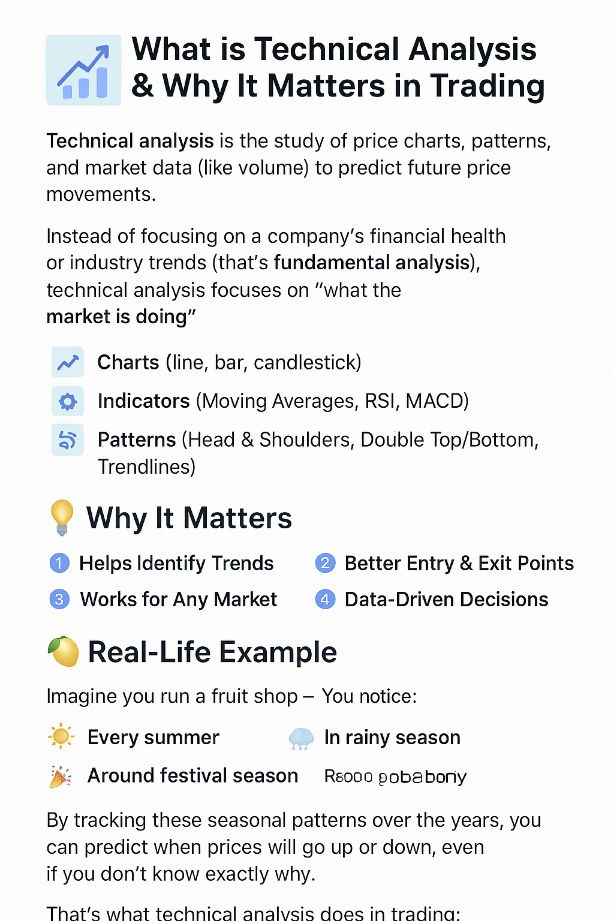

Level 1: Stock Market Fundamentals Beginner
Start your financial journey the right way. This course is the zero-to-one roadmap for absolute beginners in the Indian stock market.
We break down complex market concepts into easy-to-understand, daily-life examples, ensuring you build a solid foundation before risking a single rupee.
Start Your Learning Journey BelowWhat You Will Master in This Foundation Course
Core Concepts
- The difference between Saving vs. Investing.
- Understanding NSE, BSE, and IPOs in the Indian context.
- The vital Risk vs. Reward relationship.
Practical Setup
- Step-by-step guide to opening your Demat & Trading accounts.
- Required KYC documents for Indian brokers.
- Placing your very first trade correctly (Market vs. Limit Orders).
Analysis Overview
- Introduction to Fundamental Analysis (Company Health Check).
- Introduction to Technical Analysis (Price Behavior Study).
- Different types of investments: Stocks, Mutual Funds, ETFs.
Complete Beginner Course Syllabus
-
1. Introduction to Investing: Saving vs. Wealth Growth
Thinking about your money and how to make it grow is a smart move. Let's explore the fundamental concepts of saving versus investing, and the crucial relationship between risk and reward.
Saving vs. Investing: The Purpose of Your Money

Saving Investing For short-term goals and emergencies. For long-term goals (retirement, big purchases). Primary goal is to preserve your principal. Primary goal is to grow your wealth significantly. üí° Relatable Example: Saving is putting money in a fixed deposit for a 6-month holiday. Investing is planting a tree (equity) that grows over 20 years for retirement.
Risk vs. Reward: The Rule of the Market
To get a higher potential reward, you usually have to take on more risk. Learn how diversification (not putting all your eggs in one basket) is your first line of defense to manage this risk.
- Risk: The possibility of losing some or all of your capital.
- Reward: The potential profit (return) on your investment.
-
2. Understanding the Indian Market: NSE, BSE, & IPOs
Navigate the official marketplaces in India and understand the life cycle of a stock, from its 'product launch' (IPO) to its daily trading.

The Marketplaces: NSE and BSE
- NSE (National Stock Exchange): Known for its high-tech platform. Its benchmark is the Nifty 50 (tracking the top 50 companies).
- BSE (Bombay Stock Exchange): Asia's oldest stock exchange. Its benchmark is the Sensex (tracking 30 major companies).
Primary vs. Secondary Market
The Primary Market is where you buy shares directly from the company during its IPO (Initial Public Offering), like buying a product straight from the factory. The Secondary Market (NSE/BSE) is where you buy shares from another investor, like buying a used car—the company gets no direct money.
-
3. Key Terminology: Speaking the Market Language
Master essential terms like Bull/Bear markets, Dividends, and Portfolio. Get comfortable with the vocabulary professional traders use.
Market Moods: Bull and Bear
- üêÇ Bull Market: Prices are rising. Investor confidence is high. (The bull charges upwards).
- üêª Bear Market: Prices are falling. Investor pessimism is high. (The bear swipes downwards).
The Basics
- üí∞ Dividends
- A portion of a company’s profit paid out to shareholders—a thank you for being a part-owner.
- ü§ù Broker
- Your licensed intermediary (e.g., Zerodha) who executes your buy/sell orders on the exchange.
- üõ°Ô∏è Portfolio
- The total collection of all your investments (stocks, gold, bonds, etc.).
-
4. Types of Investments: Your Wealth Toolbox
Explore the four major financial instruments you can use to grow your money: Stocks, Mutual Funds, ETFs, and Gold.

It's important to know the difference between direct investment and managed investment:
- Stocks: Direct ownership in a company. High Risk (high reward potential).
- Mutual Funds: Managed by a professional fund manager, pooling money from many investors. Medium Risk.
- ETFs (Exchange Traded Funds): A basket of stocks that trades like a single stock. Good for diversification, like the Nifty 50 ETF. Medium Risk.
- Gold: Considered a safe haven. Good for diversification and protection against inflation. Low to Medium Risk.
-
5. Analysis Methods: The Trader’s Detective Guide
Learn the fundamental difference between analyzing a company's financial health (Fundamental) and studying its price movements (Technical).

Fundamental Analysis (The Doctor) ü©∫
Focuses on a company's intrinsic value, balance sheets, management quality, and future growth. Used by long-term investors.
- Key Metrics: P/E Ratio, Earnings Per Share (EPS).
- Relatable Analogy: Checking a phone's battery life (cash flow) and camera quality (brand value) before buying.
Technical Analysis (The Weather Forecaster) üìà
Focuses only on price charts, volume, and patterns to predict future prices. Used by short-term traders.
-
6. Basics of Technical Analysis: Reading the Chart
A focused introduction to the tools chartists use, including Candlesticks, Volume, and Moving Averages to spot trends.
The Candlestick Chart: Your Market Snapshot
The most popular chart type. Each candlestick shows the open, close, high, and low price for a period, making it easy to visualize price action at a glance.
Key Tools & Indicators
- Volume: High volume often confirms a strong move.
- Moving Average (MA): Smoothes price action to identify the underlying trend (like tracking the average temperature over 50 days).
- RSI (Relative Strength Index): Tells you if a stock is overbought (bought too much, potential reversal down) or oversold (sold too much, potential reversal up).
-
7. Setting Up Your Account: Demat & Trading
A practical, step-by-step guide to choosing a broker and securely opening your Demat (digital locker) and Trading (buy/sell) accounts for the Indian market.
The 3-Step Process for Indian Investors üáÆüá≥
- Choose a Broker: Select a discount broker (like Zerodha, Upstox) or a traditional bank (like HDFC, ICICI).
- Submit Documents: You'll need your PAN Card (POI), Aadhaar/Passport (POA), and a cancelled cheque for bank verification.
- Verification & Activation: Complete the video/in-person verification.
Ready to start? To open a free demat account and begin your investment journey with our recommended broker, click the link below:
-
8. How to Do Your First Trade (Market vs. Limit)
From choosing a safe investment (like a Nifty 50 ETF) to executing your order, learn the mechanics of your first buy or sell transaction.
Placing an Order: The Two Main Types
- Market Order: Buy/Sell immediately at the best available price. Simple but less control.
- Limit Order: Buy/Sell only at or better than a specific price you set. More control but may not execute.
Key Rules for Your First Trade
- Start Small: Only use a small amount of capital you are willing to risk.
- Choose Blue Chips/ETFs: Start with stable, well-known stocks or diversified ETFs (like the Nifty 50 ETF) for lower risk.
- Define Your Exit: Know your Stop-Loss (max loss) and Target (profit goal) before you enter the trade.
Ready to Master the Market? Stop Guessing, Start Learning.
This course gives you the confidence to move past fear and place your first trade with knowledge and discipline.
Start Level 1 Course Now